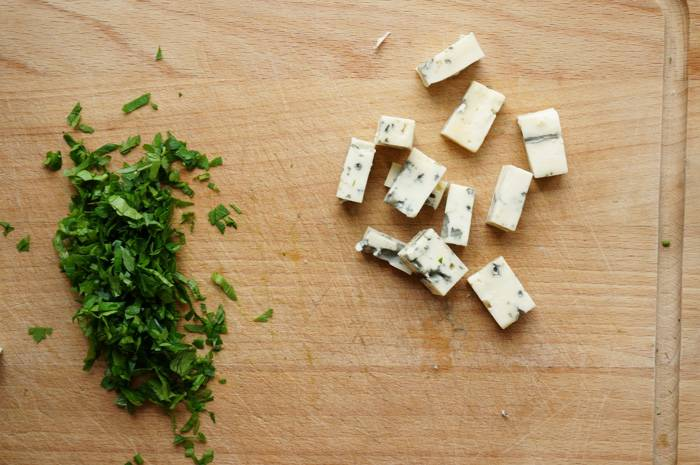

Seafood Pasta with Alfredo Sauce Recipe
Pasta is an essential part of the Mediterranean diet and is loved by many in this region. The Mediterranean climate is ideal for growing wheat, which is the primary ingredient for pasta. Additionally, the abundance of fresh vegetables, herbs, and olive oil in the Mediterranean region makes it easy to create delicious pasta dishes with simple yet flavorful ingredients.
Pasta is also a versatile dish that can be enjoyed in a variety of ways. It can be served hot or cold, as a main course or a side dish, and can be dressed up or down with a range of sauces and toppings. It is also a satisfying and filling meal that can be easily shared with family and friends.
Let me tell you the recipe for Alfredo sauce. In the West, it is more popular and known than in our country. They say it even bypasses Bolognese in popularity. But here, in order not to guess, I suggest just trying it and drawing personal conclusions and preferences.

The sauce is prepared insanely quickly, the ingredients are also quite affordable. You can add any cheese you like, garlic and your favorite herbs. There is no clear composition of the ingredients in the sauce, which is generally a plus.
First, finely chop the parsley and blue cheese. If using harder varieties like Parmesan, use a grater.
We clean the shrimp from the shells. Again, you can use other seafood and mushrooms instead, you can even use chicken.
Let's cook the pasta. Of course, we use the 1110 rule!
Well, now it's time to prepare the sauce. In a hot frying pan, melt the butter, here you need not to overcook it, otherwise it will start to darken. Once it's all melted, pour in the cream. Stir constantly until the sauce begins to thicken. Add salt and pepper to taste.

The sauce is starting to set but is still runny. Add cheese, herbs. You interfere again. The consistency should be such that with a spatula, you can leave a mark.

At the very end, add the shrimp and after a minute the finished pasta. Mix everything well and serve immediately!
It comes out very creamy and cheesy taste, rich in aromas of herbs and the pasta itself. Very tasty and I think it's still worth trying at least once!